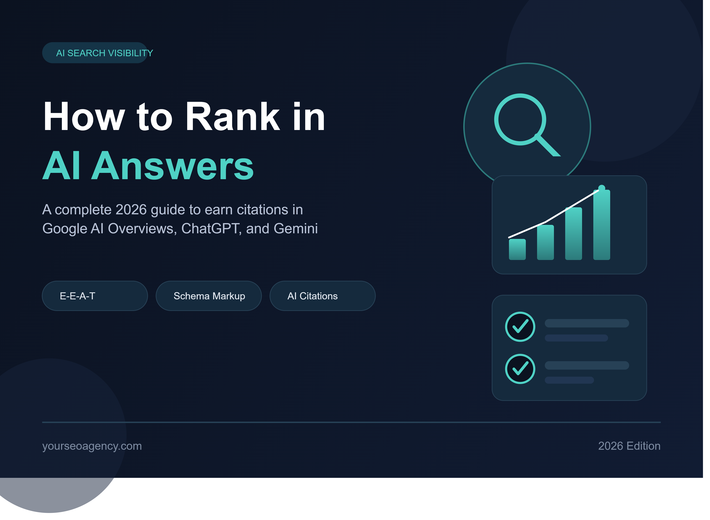

How to Rank in AI Answers: The Complete Guide for 2026

Search behavior has changed faster in the last two years than in the previous decade. Instead of scanning ten blue links, people now ask a question and get a synthesized response right at the top of the page — often before they ever scroll down. If you want your business to stay visible, you need to understand how to rank in AI answers, not just how to rank in traditional search results. This guide walks through exactly what that means, why it matters, and the practical steps you can take today to get your content selected, summarized, and cited by AI-driven search experiences like Google AI Overviews, AI Mode, ChatGPT, Perplexity, and Gemini.
The good news: ranking in AI answers isn't a mysterious new discipline built from scratch. It's an extension of solid, helpful, well-structured content — with a few added layers that make your pages easier for machines to parse, trust, and quote. Let's break down how it works.
What Does It Mean to Rank in AI Answers?
When someone types a question into Google, ChatGPT, or Perplexity, these platforms no longer just list matching pages. They generate a direct, conversational answer by pulling and synthesizing information from multiple trusted sources, then (in most cases) citing where that information came from. Ranking in AI answers means your page is one of the sources selected for that summary — whether it's a citation chip inside a Google AI Overview, a linked source in a ChatGPT response, or a referenced result in Perplexity.
This is a meaningful shift from traditional ranking. In classic SEO, success is measured by position on the results page. In AI search, success is measured by whether your content gets pulled into the answer itself — sometimes even when you aren't the number-one organic result.
Why Ranking in AI Answers Matters More Than Ever
AI-generated answers now appear on a large share of informational searches, and that share keeps growing. Ignoring this shift means gradually losing visibility even if your traditional rankings stay stable. Here's what's at stake, and what you gain by adapting.
Key Benefits
- Higher brand visibility: Being cited inside an AI answer puts your brand name in front of users who may never scroll to organic results.
- Stronger trust signals: A citation from an AI engine acts as a third-party endorsement of your expertise, which can influence buying decisions later.
- More qualified traffic: Clicks that do come through from an AI citation tend to come from users with clearer, more specific intent.
- Competitive advantage: Many businesses still aren't optimizing for AI answers, which creates an opening for early movers in their niche.
- Long-term resilience: The structural and authority improvements needed to rank in AI answers also strengthen your traditional organic rankings.
Practical Use Cases
Ranking in AI answers isn't limited to blogs and news publishers. A local service business can get cited when someone asks an AI assistant how to choose a contractor. A SaaS company can appear in a comparison summary when a prospect asks which tool solves a specific problem. An ecommerce brand can be referenced in a buying-guide style answer. Any business that publishes genuinely useful, well-organized information has a real shot at being the source an AI engine chooses to cite.
Step-by-Step Guide to Rank in AI Answers
There's no single switch you can flip to guarantee a citation. Instead, ranking in AI answers comes from stacking several reinforcing signals. Follow these steps in order for the best results.
Step 1: Map Your Content to Real User Intent
Before writing anything, identify the exact question your audience is asking and why. AI systems are built to satisfy the underlying intent behind a query, not just match keywords. Look at the "People Also Ask" boxes, related searches, and the actual phrasing of questions your customers use, then build content that answers that specific need completely.
Step 2: Build Topical Authority, Not Just a Single Page
AI engines favor sites that demonstrate depth across an entire subject, not just one well-optimized article. Create a cluster of interlinked content around your core topic so that, together, your site reads as a comprehensive, trustworthy resource on the subject.
Step 3: Lead With a Direct Answer
Open each page — and ideally each major section — with a concise, direct answer in the first few sentences. AI systems frequently lift this opening language almost as-is when constructing a summary, so it needs to stand on its own without requiring the reader to scroll for context.
Step 4: Structure Content for Machine Readability
Use descriptive headings, numbered steps, bullet lists, and short paragraphs. Structured formats are consistently associated with higher inclusion rates in AI-generated summaries because they're easier for a language model to extract and reformat accurately. Avoid long, unbroken blocks of text.
Step 5: Strengthen Your E-E-A-T Signals
Experience, Expertise, Authoritativeness, and Trust remain the backbone of what gets cited. Add clear author bylines with real credentials, cite primary sources like original research or first-party data, include genuine examples or case studies, and keep your contact information and policies transparent and up to date.
Step 6: Add Structured Data (Schema Markup)
Implement Article schema, FAQ schema, and, where relevant, HowTo or Product schema. While schema alone won't force a citation, it helps AI systems and search engines parse your content's meaning and context faster and more accurately, which supports broader visibility across AI-driven features.
Step 7: Earn Authoritative Backlinks and Mentions
Citation behavior still correlates strongly with sites that carry real link equity and brand mentions across the web. Prioritize earning links and mentions from reputable, relevant sources in your industry rather than chasing high volumes of low-quality links.
Step 8: Keep Content Fresh and Accurate
AI systems tend to favor recently updated, accurate content over stale pages, even if the stale page ranked well historically. Review your top pages regularly, update statistics and examples, and display a visible "last updated" date to reinforce currency.
Step 9: Fix the Technical SEO Foundation
None of the above matters if your pages can't be crawled and indexed. Confirm that AI and search crawlers are allowed in your robots.txt, resolve any indexing errors, and improve Core Web Vitals — load speed, interactivity, and visual stability all still factor into whether your content gets prioritized.
Step 10: Track and Measure Your AI Visibility
Traditional rank tracking doesn't capture the full picture anymore. Monitor Google Search Console impressions for queries known to trigger AI Overviews, watch for referral traffic from AI platforms, and periodically check manually whether your brand appears in AI-generated answers for your priority queries.
Common Mistakes When Trying to Rank in AI Answers (and How to Avoid Them)
- Mistake: Keyword stuffing instead of answering the question. AI systems weigh semantic relevance and clarity far more heavily than exact keyword repetition. Fix: write naturally, and let related terms and synonyms appear where they genuinely fit.
- Mistake: Publishing thin, mass-produced content with no editorial review. AI systems and search engines are increasingly effective at filtering out unoriginal or low-effort pages. Fix: have a knowledgeable person review, refine, and add original insight to every published page.
- Mistake: Burying the answer under long introductions. If a reader — or an AI model — has to scroll to find the actual answer, your content is less likely to be selected. Fix: answer the core question in the first two or three sentences of the page or section.
- Mistake: Ignoring technical SEO because "AI is different now." AI Overviews and similar features still pull heavily from pages that already rank well organically. Fix: keep your technical SEO foundation — indexing, speed, mobile usability — solid.
- Mistake: Blocking AI crawlers across the board. Some sites block all AI bots out of caution, which also removes any chance of citation. Fix: decide deliberately, engine by engine, whether you want visibility on that platform, then configure crawler access accordingly.
- Mistake: Treating AI answer optimization as a one-time project. AI models retrain, re-crawl, and re-rank content continuously. Fix: build a recurring content review and refresh cycle instead of a single optimization push.
Latest Trends and Best Practices for Ranking in AI Answers
The landscape around AI-driven search continues to evolve quickly, and a few trends stand out heading into the rest of 2026:
- Answer Engine Optimization (AEO) and Generative Engine Optimization (GEO) have emerged as formal disciplines sitting alongside traditional SEO, focused specifically on earning visibility across ChatGPT, Perplexity, Claude, Gemini, and Google's AI features together, rather than optimizing for one engine at a time.
- Multi-engine citation tracking is becoming standard practice, since citation behavior varies significantly between AI Overviews, AI Mode, and third-party chat assistants — a page cited in one may be ignored by another.
- Chunking content for extraction, done carelessly, is being penalized. Search engines have signaled they don't want content artificially broken into fragments purely to game AI summarization; genuine structure for readability is rewarded, but manipulation is not.
- Core Web Vitals are increasingly evaluated as a single composite signal rather than three separate metrics, making holistic page performance more important than optimizing one metric in isolation.
- Author and organizational transparency — real bylines, credentials, and a verifiable publisher identity — has become one of the strongest differentiators between pages that get cited and pages that don't.
- Content freshness has more weight than before, with recently reviewed and updated pages showing consistently stronger presence in AI-generated results than outdated ones, even when the outdated page has more historical backlinks.
How AlgorithmOptix IT Helps You Rank in AI Answers
Ranking in AI answers takes more than a single blog post or a one-time technical fix — it requires an ongoing strategy built around intent, structure, authority, and technical health. This is exactly where founder-led SEO support can help.
We start every engagement with a free, no-obligation SEO audit that reviews your current visibility across traditional search and AI-driven features, identifies technical barriers, and highlights the content gaps keeping you out of AI-generated answers. From there, we build a transparent, step-by-step process — you'll always know exactly what we're doing, why we're doing it, and how it connects back to your business goals, with clear reporting at every stage.
Rather than chasing short-term tricks, we focus on long-term SEO strategy: strengthening your topical authority, improving your E-E-A-T signals, implementing the right schema markup, and continuously refreshing your highest-value content so your visibility compounds over time instead of fading after the next algorithm update. Clients choose us because we combine proven, time-tested SEO fundamentals with the newer structural and authority signals AI systems reward — without ever resorting to manipulative or short-lived tactics that put your site at risk.
Ready to see where you stand? Request your free SEO audit today and get a clear, honest roadmap for how to rank in AI answers — and stay visible as search keeps evolving.
Frequently Asked Questions
What does it mean to rank in AI answers?
Ranking in AI answers means your content is selected, summarized, or directly cited by AI-driven search features such as Google AI Overviews, AI Mode, ChatGPT, Perplexity, and Gemini when they respond to a user's question.
Is ranking in AI answers different from traditional SEO?
It builds on traditional SEO rather than replacing it. Most cited pages already rank well organically, but AI systems place extra weight on clear structure, direct answers, topical depth, and demonstrated E-E-A-T.
Do I need schema markup to rank in AI answers?
Schema markup is not a guaranteed ranking factor, but it helps AI systems and search engines understand your content faster and more accurately, which supports better visibility in AI-generated results.
How long does it take to rank in AI answers?
Most sites see initial movement within 8 to 12 weeks of implementing structural and authority improvements, though building the topical authority AI systems reward is an ongoing, long-term process.
Can small businesses rank in AI answers?
Yes. AI systems often cite pages with strong first-hand expertise and clear, well-organized answers even when the site isn't a large or well-known brand, since relevance and trust matter more than domain size alone.
Should I block AI crawlers to protect my content?
Blocking AI crawlers removes your chance of being cited on that specific platform. If visibility in AI answers is a goal, it's generally better to allow reputable AI crawlers rather than block them.
Conclusion: Your Action Plan to Rank in AI Answers
Learning how to rank in AI answers is quickly becoming as important as traditional SEO itself — and the strategies overlap more than they diverge. Focus on genuinely answering user intent, structure your content so machines and humans can both scan it easily, back up every claim with real expertise, and keep your technical foundation clean. Add schema markup to help AI systems parse your pages accurately, and commit to refreshing your best content on a regular schedule rather than treating optimization as a one-time task.
Actionable takeaways:
- Lead every page and section with a direct, concise answer before adding supporting detail.
- Build topic clusters instead of isolated articles to establish real topical authority.
- Add named author bylines, credentials, and primary-source citations to strengthen E-E-A-T.
- Implement Article and FAQ schema markup across your key pages.
- Audit your technical SEO — indexing, crawler access, and Core Web Vitals — regularly.
- Refresh high-value content on a set schedule and track your AI citation visibility over time.
If you'd rather have an experienced specialist handle this for you, AlgorithmOptix IT can build and execute this entire strategy on your behalf — starting with a free audit of where you stand today.